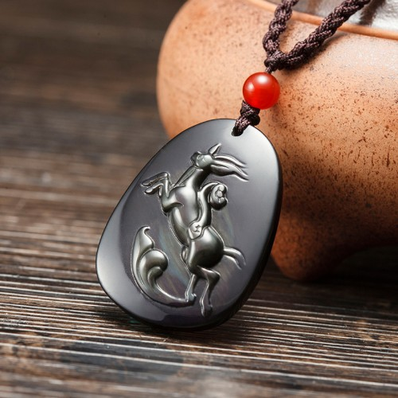

Tips：农历生肖运势即将进入2018年狗年，属兔2018年运势及运程抢先看，新年早开运，狗年求吉祥！
属兔2017年运势及运程详解
属兔的年份：1999、1987、1975、1963、1951、1939年
属兔人2017年事业运势
卜易居大师点评：步步为营 出门有利
生肖属兔的人，今年因为与丁酉鸡年相冲，即俗称冲太岁，也是犯太岁的一种，故此难以言吉！而且命宫中又有众多凶星汇聚，所以流年运势崎岖不平，必须步步为营！幸而命宫中有「天解」吉星高照，可化解一部份煞气，故此尚算强差人意。工作进展将会诸多阻滞，而且又会有诸多人事纷争，往往会有举步维艰、左右为难之叹！必须冷静客观地看清形势，谋定而后动，以免误入迷津。今年的运势宜守不宜攻，必先求紧守岗位，站稳脚根，以免被冲击得根基动摇而一蹶不振！若要转工或转业，今年之内应可免则免。今年驿马星动，属兔的人今年出门有利，很可能出路喜遇贵人。今年的工作运势，以秋冬之间的四五个月最为低沉反复，在这期间处理业务必须加倍小心谨慎！幸而年尾运势将大为好转，属兔的人若想今年事业不致空白无成，便必须在年尾急起直追。今年工作进展欠佳的月份，是农历三月、四月、六月、七月、九月及十一月。今年工作进展较为畅顺的月份，是农历的正月、五月及十二月。属兔人今年犯太岁，年初可在家中挂一个【卜易居化太岁增庆福袋】以化解太岁的煞气和灾厄，保安康顺遂，平安无虞。

属兔人2017年财运精准预测
卜易居大师点评：投资不利 钱财流泄
属兔的人，今年财星破损，财运低迷不振，正财收入反复，故此必须尽量做到量入为出，以免经济出现危机！今年不宜作重大投资，以免血本无归；而横财更是切勿强求，否则便很可能后悔莫及。因为命宫中有「大耗」凶星出现，警示理财必须加倍小心谨慎，稍有疏忽，钱财便会大量流泄不止。今年除并且还很可能要破财挡灾。今年财运低迷的月份，是农历二月、三月、四月、七月、九月、十月及十一月，在以上这几个月，理财必须格外小心谨慎！农历正月慎防失窃，二月及七月慎防受胎破财，十月切勿借贷，以免人财两失。属兔人今年要增强财运，可在家中摆放一个“卜易居铜貔貅”以使得财气亨通顺遂，减少破耗之虞。出门求财，可查一下今年财神方位，择吉日而行。
属兔人2017年健康运势
卜易居大师点评：神经紧张 慎防受伤
属兔的人，今年健康平平，而且神经紧张，易受头痛失眠困扰；必须尽量放松，以免长期抑郁而惹起无穷后患。今年最需要注意的，是自己的人身安全。因有「血刃」凶星照命，警示今年易被刀剪斧锯等利器刺伤或割伤；又因为同时有「浮沉」以及「破碎」凶星出现在命宫中，这警示今年无论游水或登山均需特别注意安全，以防溺水或从高处堕下受伤。今年身体健康最易出问题的月份，是农历的三月、四月、七月、八月、九月及十一月。开车的属兔人今年要注意交通安全，切勿酒后驾驶，慎防交通意外而受伤。
属兔人2017年爱情婚姻运势
卜易居大师点评：真诚相待 切忌吵闹
属兔的人，今年虽然事业失意，但感情方面的发展却并不太差，很可能找到一位合意对象。年中有一段时期感情较为波动，会有不少闲言闲语，但只要真心一片，便可望排除万难，守得云开见月明。但请紧记无论情况如何，也绝不能恶言吵闹，否则便恨错难返！今年感情发展较佳的月份，是农历正月、五月、八月、十月及十二月，好好把握时机来培养情苗。属兔人今年可佩戴一串“亥卯未增庆手链”以促进感情的和谐顺遂，有对象者化解感情的不利因素，恩爱和谐，单身者可早日觅得佳缘。
属兔的婚配：属兔的和什么属相最配
属兔的青少年2017年运势
今年读书情绪低落，会有无心学习的倾向；若不努力加以改正，学业成绩将会大幅下滑。健康欠佳，必须尽量放松，早眠早起，以免身体健康恶化下去。今年参与课外活动，或者出门旅行，均必须密切注意安全，以免意外受伤。
属兔的女性2017年运势
今年健康情况未如理想，必须小心保养，以免疾病缠身。财星破损，理财稍有疏忽，钱财便会大量向外流泄，而且很可能需要破财挡灾。属兔的少女，今年感情扑朔迷离，疑患疑真，慎防因太迷惘而失控。
属兔人2017年吉祥物

属兔2017年吉凶方位
属兔的人今年的三个生旺吉方，是东方、西北及西方；若能把睡床、工作台和沙发摆放在屋内这三个方位上，便可符合这生肖今年的风水趋吉之道，有助改善流年运程。
倘若未能如此，最少亦要把这三种最重要的家具避开西南及南方，以符合避凶之道。以上所提出的吉凶方位，是纯以生肖属兔的人来计算；而与其它生肖无关，请勿混淆。
属兔人2017年幸运色
属兔的人今年的生旺颜色是黄、红以及紫色；若能利用这些颜色来布置房间、或配衬衣物，这会对改善流年运程大有帮助！属兔的人今年忌蓝色及绿色，最好能尽量避免使用。
属兔人2017年幸运数字
属兔的人今年的生旺数字是3及5。
抢先关注：属兔的人2018年运程
不同兔年出生的属兔人2017年运势详解
1999年属兔的人2017年运程
1999年出生的人，今年读书情绪低落，会有无心学习的倾向，家长必须设法帮助矫正。密切提防摔倒受伤。
1987年属兔的人2017年运程
1987年出生的人，今年必须专心学业，以免成绩大倒退！远离利器，以免意外受伤，尽量避免与爱侣争吵。87年属兔人今年若要开运解灾，增旺运势，可佩戴本站周易专家团队精心设计的增庆堂属兔2017吉祥物吊坠，该圣品图案为一只羚羊背驮如意，采用高档彩虹眼黑曜石精雕而成，寓意您在2017年勤勉机智，工作上进，行事敏捷，运势虽有险阻，得金羚贵神之庇护，化解太岁，守护一年之平安。亦可同时佩戴增庆堂属兔六合贵人手链，更具功效。开车人士，可在爱车挂上一串增庆堂富贵如意琉璃挂件，以保行车安全。
1975年属兔的人2017年运程
1975年出生的人，今年工作进展诸多阻滞，亦会有诸多人事纷争，必须沉着应变。横财千万不可强求。75年属兔人今年若要开运解灾，增旺运势，可佩戴本站周易专家团队精心设计的增庆堂属兔2017吉祥物吊坠，该圣品图案为一只羚羊背驮如意，采用高档彩虹眼黑曜石精雕而成，寓意您在2017年勤勉机智，工作上进，行事敏捷，运势虽有险阻，得金羚贵神之庇护，化解太岁，守护一年之平安。亦可同时佩戴增庆堂属兔六合贵人手链，更具功效。开车人士，可在爱车挂上一串增庆堂富贵如意琉璃挂件，以保行车安全。
1963年属兔的人2017年运程
1963年出生的人，今年工作方面宜守不宜攻，以免一败涂地！重大投资可免则免，需防有可能要破财挡灾。63年属兔人今年若要开运解灾，增旺运势，可佩戴本站周易专家团队精心设计的增庆堂属兔2017吉祥物吊坠，该圣品图案为一只羚羊背驮如意，采用高档彩虹眼黑曜石精雕而成，寓意您在2017年勤勉机智，工作上进，行事敏捷，运势虽有险阻，得金羚贵神之庇护，化解太岁，守护一年之平安。亦可同时佩戴增庆堂属兔六合贵人手链，更具功效。开车人士，可在爱车挂上一串增庆堂富贵如意琉璃挂件，以保行车安全。
1951年属兔的人2017年运程
1951年出生的人，今年钱财易泄，将会有不少额外开支。出门有利，很可能出路遇贵人。密切提防水险。
1939年属兔的人2017年运程
1939年出生的人，今年健康欠佳，易受头痛失眠困扰，慎防积劳成疾。财运低迷，理财必须格外小心谨慎。
属兔人2017年全年每月运势
农历正月 公历2017年2月3日至3月5日
本月春风吹暖，水到渠成
属兔的人今年冲犯太岁，故此运势欠佳；幸而年初这个月吉星拱照，将可逢凶化吉。工作进展畅顺，而且会有贵人相助，顺水推舟便可马到功成！在这期间最重要的，是要尽量吸收多些与工作有关的专业知识，努力充实自己，这样才可接受未来的挑战，以确保屹立不倒。财运亨通，正财及横财俱有所获；但必须小心看管钱财，慎防失窃。健康良好，但需密切注意家中老人的健康。这个月感情生活多姿多彩。
农历二月 公历2017年3月6日至4月4日
本月迂回向下，未雨绸缪
上个月的旺运昙花一现，至此便无以为继；工作出现阻滞，很多潜藏已久的毛病将会陆续浮现出来，而且还会平添不少人事纷争！在这段期间最重要的，是尽量做好自己本份，默默耕耘；切勿刻意创新求变，因为时机尚未成熟，不宜轻举妄动。财运转趋低迷，投资及赌博可免则免；此外，并需慎防受骗破财。健康似是而非，易被病魔乘虚而入，必须密切注意保养，慎防酒色伤肝。切勿冷落爱侣，以免感情出现裂痕。
农历三月 公历2017年4月5日至5月5日
本月一波三折，慎防摔伤
因有「破碎」凶星照命，这个月的运势一落千丈，很多不如意事将会接连而来，必须先有心理准备，以免被冲击得一败涂地。工作进展一波三折，而且是非缠身！在这段期间最重要的，是要忍辱负重，尽量化解矛盾冲突；千万不可意气用事，以免小不忍而乱大谋。易惹血光之灾，必须密切注意安全，特别要提防从高处堕下受伤。财运低迷，投资及赌博均以暂时忍手为宜。这个月感情易起风波，切忌太感情用事。
农历四月 公历2017年5月6日至6月5日
本月诸多争拗，钱财易泄
这个月的运势依然低沉不振，因为有众多凶星照命，这个月工作上将会出现诸多争拗，以致工作进展停滞不前！在这期间最重要的，是切勿固执己见，必须保持冷静客观，心平气和地去化解纷争，意气用事只会令事态更加恶化下去。这个月财星破损，理财必须特别小心，以防出现经济危机！横财切勿憧憬，以免因贪而变贫。这个月情绪紧张，易受头痛失眠困扰；必须尽量放松自己，请记紧心病还需心药医。
农历五月 公历2017年6月6日至7月7日
本月吉星高照，广结善缘
因有「天解」吉星照命，这个月气势如虹，虽然偶有困阻，亦将可逢凶化吉。工作困阻一一消除，小人亦会退避三舍。在这期间最重要的，是要广结善缘，除了要尽量结交志趣相投的人，并要设法化解宿怨，化敌为友，这肯定会对未来的事业发展大有裨益。财运大有起色，正财收入丰足，而且还会有不少额外收入；但这个月将会有不少意外开支，故此必须注意量入为出。感情出现转机，好好珍惜这段机缘。
农历六月 公历2017年7月8日至8月7日
本月驿马星动，谋定而动
这个月的运势略有回升，但会有暗涌潜伏，故此仍未可掉以轻心，以免阴沟里翻船。工作进展尚可，但因有强敌环伺，很可能猝然生变！在这段期间最重要的，是必须先看清形势，审时度势，谋定而后动，以免自乱阵脚而被冲击得一蹶不振。这个月驿马星动，出门有利，适宜出外旅游或公干，很可能出路遇贵人。健康并无大碍，但切勿沾惹毒品，并需慎防水险。感情有如镜花水月，会有患得患失的空虚感。
农历七月 公历2017年8月8日至9月7日
本月劳碌奔波，慎防水险
因为命宫中凶星混杂，这个月的运势甚为崎岖，不如意事将会接连而来，应先有心理准备，以免猝不及防而一败涂地。工作劳碌奔波，而且备受指责排挤！在这段期间最重要的，是必须多些主动与人沟通，主动示好，消除隔膜，以免误会愈积愈深。因有「浮沉」凶星照命，警示这个月必须慎防水险，欺山莫欺水，切勿掉以轻心。财星破损，这个月投资及赌博均可免则免！并需慎防受骗破财，以免损失惨重。
农历八月 公历2017年9月8日至10月8日
本月稳打稳扎，知足常乐
这个月的运势略有起色，但仍将会有不少阻滞，暂时仍未可松懈下来，以免阴沟里翻船。工作进展尚算畅顺，但可惜仍会受人事纷争困扰！在这段期间最重要的，是必须沉着应变，稳打稳扎，先求能确保屹立不倒，然后再随图后计。财运略有改善，正财收入转趋稳定，但横财依然低迷，故此切勿妄贪非份之财，请紧记知足常乐这古训。感情出现转机，必须好好珍惜，这个月健康尚可，但仍需提防水险。
农历九月 公历2017年10月9日至11月7日
本月慎防官非，好事多磨
因有「阑干」凶星照命，这个月的运势风雨飘摇，工作进展停滞不前，而且还会招惹不少是非及官非，倘若处理稍一不慎，便会后患无穷！在这段期间最重要的，是必须坚持原则去待人处事，切勿利欲熏心而触犯法纪，同流合污，否则便很可能有牢狱之灾。感情易起风波，很可能有第三者闯入，好事多磨，必须多与爱侣沟通，表示关怀。这个月钱财易泄难聚，很可能出现经济困难。健康欠佳，慎防病魔乘虚而入。
农历十月 公历2017年11月8日至12月7日
本月守时守信，切忌借贷
这个月的运势较佳，阴霾逐渐消散，而且人事纷争亦暂告一段落，工作可以重新走上正轨；但仍需远离损友，以免受其牵连拖累。在这段期间最重要的，是要守时守信，工作会议及签订合约均勿迟到或不守承诺，以免自误前程。财运反复，时好时坏，这个月切勿借贷，既要避免向人借贷，亦要避免借钱给人，以免最终人财两失。健康大有起色，但需密切注意交通安全。这个月易与异性擦出火花，但会有不少闲言闲语。
农历十一月 公历2017年12月8日至2018年1月5日
本月韬光养晦，远离利器
这个月的运势一落千丈，必须步步为营，切勿轻举妄动，以免摔得一蹶不振。工作进展有如逆水行舟，易退难进；而且很可能成为受攻击的目标！在这段期间最重要的，是必须尽量保持低调，默默耕耘，韬光养晦；切勿与人斤斤计较，针锋相对肯定有百害而无一利，因有「血刃」凶星出现在命宫中，这个月对锋利的工具，例如刀剪斧锯等等必须小心戒备，以免惹来血光之灾。财星破损，切忌参与高风险的投机性买卖。
农历十二月 公历2018年1月6日至2月3日
本月苦尽甘来，开创新基
属兔的人今年虽然犯太岁，运势崎岖不平，但年尾这个月因有「八座」吉星照命，故此运势畅旺，颓气尽消，苦尽甘来。工作灵感涌现，创作力特佳！在这期间最重要的，是要放眼未来，及早筹划未来的发展大计，推陈出新，乘时推展新方案、或是开创新的事业基础，肯定将大有可为。财里高照，财运大有起色；若要投资创业，这正是有利可图的良好时机。健康良好，但需防酒色伤身，这个月感情生活多姿多彩。
2018年运程十二生肖运势：属兔2018年运势及运程
读过此篇文章的网友还读过：
☑ 属猪的人2017年运程
☑ 属龙的人2017年运程
☑ 属狗的人2017年运程
☑ 属猴的人2017年运程
☑ 属羊的人2017年运程
☑ 属马的人2017年运程